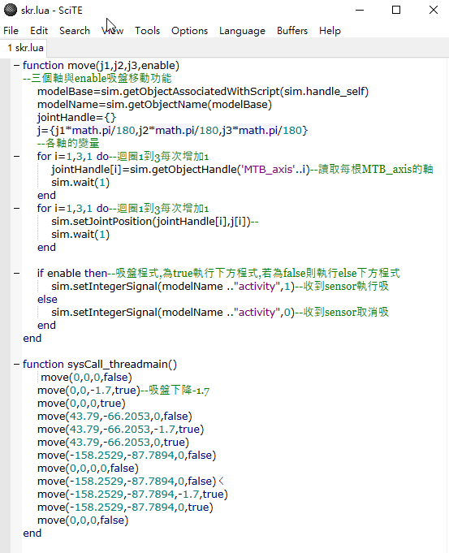
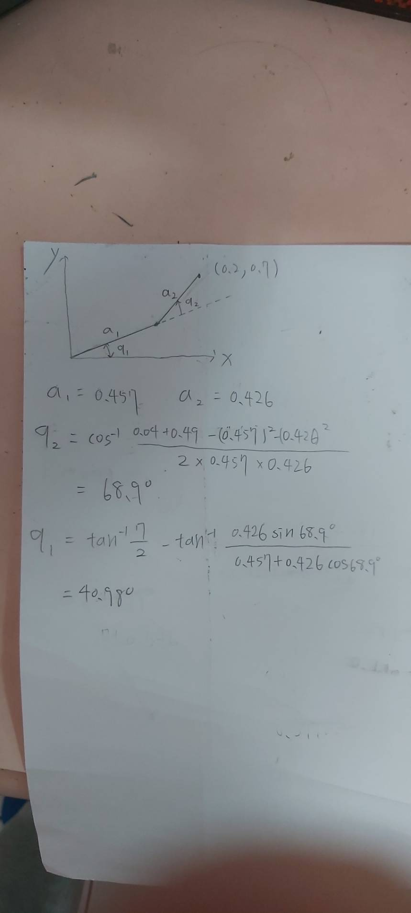
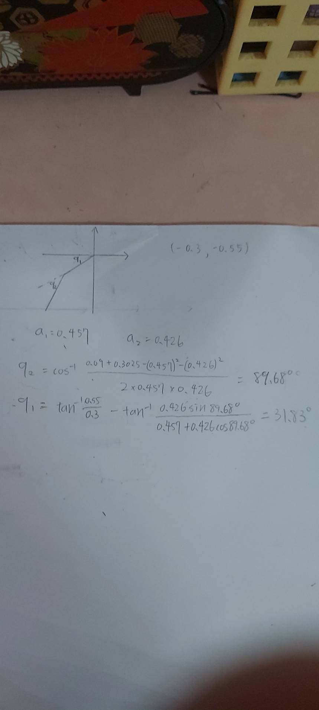

inverse kinematic 逆向運動學 <<
Previous W16
一.onshape零組件繪製
圖檔與stl
二.
建立 CoppeliaSim 4.1.0 MTB robot 場景
剛開始的圖檔只是空殼,需要再添增內部形狀編輯程式(toggle shape)編輯完接下來不管任何皮都可以套用
lua執行
軸如果有跑出驚嘆號可以先把軸改成被動模式,因為我的圖只有3個軸(沒有吸盤的旋轉軸),有那個也沒用所以沒有新增,但是lua程式要做修改

三.加入components-gripper-suction pad 吸盤 場景檔&程式檔
function sysCall_init()
axis1=sim.getObjectHandle('MTB_axis1')
axis2=sim.getObjectHandle('MTB_axis2')
axis3=sim.getObjectHandle('MTB_axis3')
mtb3=sim.getObjectHandle('MTB_3')
suctionPad=sim.getObjectHandle('suctionPad')
BaseFrame=sim.getObjectHandle("BaseFrame")
block =sim.getObjectHandle("Cuboid")
rotation1 = 0
distance3 = 0
deg = math.pi/180
end
function sysCall_actuation()
-- 吸盤往下降時, 直接貼在方塊頂部的校正值, 單位 m
-- 向下較正值為 4.2 mm
calibration = 0.0042
message, auxiliaryData=sim.getSimulatorMessage()
while message ~= -1 do
key=auxiliaryData[1]
sim.addStatusbarMessage('使用者按下 key:'..key)
if (message==sim.message_keypress) then
if (auxiliaryData[1]==112) then --p activate the suction pad
-- if key p pressed activate the suction mode
sim.setScriptSimulationParameter(sim.getScriptAssociatedWithObject(suctionPad),'active','true')
end -- if p
if (auxiliaryData[1]==113) then --q deactivate the suction pad
-- if key q pressed deactivate the suction mode
sim.setScriptSimulationParameter(sim.getScriptAssociatedWithObject(suctionPad),'active','false')
end -- if q
if (auxiliaryData[1]==114) then --r right turn in degree
-- if key r pressed axis1 angle adds 5 degrees
rotation1 = rotation1 + 5*deg
sim.setJointPosition(axis1, rotation1)
end -- if r
if (auxiliaryData[1]==108) then --l left turn in degree
-- if key l pressed axis1 angle substract 5 degrees
rotation1 = rotation1 - 5*deg
sim.setJointPosition(axis1, rotation1)
end -- if l
if (auxiliaryData[1]==117) then --d suction pad down
-- if key d pressed axis3 will down 0.01 m plus calibration
distance3 = distance3 + 0.01 + calibration
sim.setJointPosition(axis3, distance3)
end -- if d
if (auxiliaryData[1]==100) then --u suction pad up
-- if key u pressed axis3 will up 0.01 m minus calibration
-- 吸盤往下升 1 公分加上校正值
distance3 = distance3 - 0.01 - calibration
sim.setJointPosition(axis3, distance3)
end -- if u
if (auxiliaryData[1]==99) then --c coordinate of block
blockPosition = sim.getObjectPosition(block, BaseFrame)
sim.addStatusbarMessage("方塊目前座標為:"..table_to_string(blockPosition))
end --if c
end -- if
message, auxiliaryData=sim.getSimulatorMessage()
end -- while
end -- function
function sysCall_sensing()
--[[
-- Read Proximity sensor (0= nothing detected, 1 = object detected)
local res = sim.readProximitySensor(proximity)
-- Check if possible to insert an new box
if (sim.getSimulationTime()-T_last_inserted > T_insert) and not hasStopped then
insertBox()
end
-- If proximity sensor detects an object, stop the belt, stop inserting objects
if res == 1 and not hasStopped then
if boolList[1] then
sim.setScriptSimulationParameter(sim.handle_self,"conveyorBeltVelocity",0)
deltaTime = sim.getSimulationTime()-T_last_inserted
hasStopped = true
else
local box = table.remove(boxList,1)
local boxDummy = table.remove(boxDummyList,1)
table.remove(boolList,1)
sim.removeObject(box)
sim.removeObject(boxDummy)
end
end
-- If proximity sensor detects nothing and belt has stopped, start belt, continue inserting
if res == 0 and hasStopped then
sim.setScriptSimulationParameter(sim.handle_self,"conveyorBeltVelocity",beltSpeed)
hasStopped = false
T_last_inserted = sim.getSimulationTime()-deltaTime
end
]]--
end
function sysCall_cleanup()
end
-- Convert a lua table into a lua syntactically correct string
function table_to_string(tbl)
local result = "{"
for k, v in pairs(tbl) do
-- Check the key type (ignore any numerical keys - assume its an array)
if type(k) == "string" then
result = result.."[\""..k.."\"]".."="
end
-- Check the value type
if type(v) == "table" then
result = result..table_to_string(v)
elseif type(v) == "boolean" then
result = result..tostring(v)
else
v = round(v, 4)
result = result.."\""..v.."\""
end
result = result..","
end
-- Remove leading commas from the result
if result ~= "" then
result = result:sub(1, result:len()-1)
end
return result.."}"
end
function round(x, n)
n = math.pow(10, n or 0)
x = x * n
if x >= 0 then x = math.floor(x + 0.5) else x = math.ceil(x - 0.5) end
return x / n
end
function insertBox()
-- Generate random numbers
local rand1 = math.random()
local rand2 = math.random()
local rand3 = math.random()
-- Generate random disturbances on position and orientation
local dx = (2*rand1-1)*0.1
local dy = (2*rand2-1)*0.1
local dphi = (2*rand3-1)*0.5
local disturbedCoordinates = {0,0,0}
disturbedCoordinates[1] = insertCoordinate[1]+dx
disturbedCoordinates[2] = insertCoordinate[2]+dy
disturbedCoordinates[3] = insertCoordinate[3]
-- Copy and paste box and boxDummy
local insertedObjects = sim.copyPasteObjects({box,boxDummy},0)
-- Update last inserted box time
T_last_inserted = sim.getSimulationTime()
-- Move and rotate
sim.setObjectPosition(insertedObjects[1],-1,disturbedCoordinates)
sim.setObjectOrientation(insertedObjects[1],-1,{0,0,dphi})
-- Store handles to boxes and dummies
table.insert(boxList,insertedObjects[1])
table.insert(boxDummyList,insertedObjects[2])
-- Decide if object is good or bad
local decision = math.random()
if decision <= goodPercentage then
-- Object is good, assign goodColor
sim.setShapeColor(insertedObjects[1],nil,sim.colorcomponent_ambient_diffuse,goodColor)
table.insert(boolList,true)
else
-- Object is bad, assign random color
sim.setShapeColor(insertedObjects[1],nil,sim.colorcomponent_ambient_diffuse,{rand1,rand2,rand3})
table.insert(boolList,false)
end
end
p:吸盤吸取 Q:吸盤取消
R:逆時鐘轉 L:順時鐘轉
D:伸下去吸 U:伸上去
四.逆向運動學函式
skr.lua coppeliasim
(0.2, 0.7, 0.05)

(-0.3, -0.55, 0.05)

五.
inverse kinematic 逆向運動學 <<
Previous